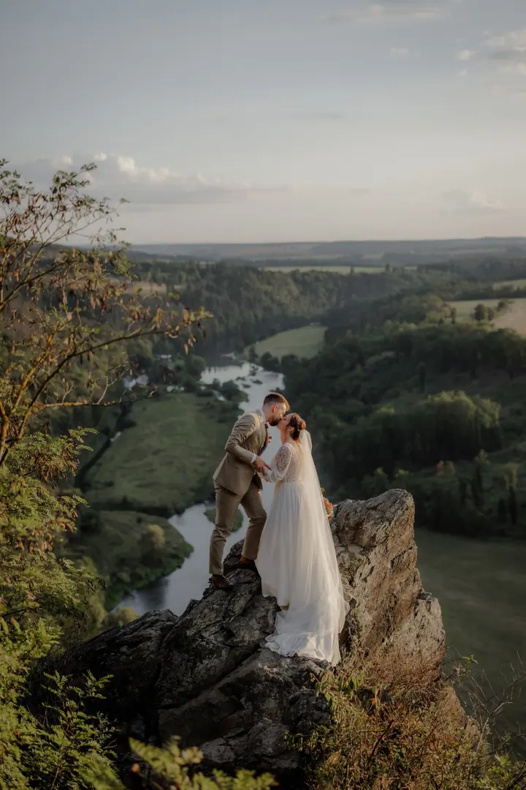
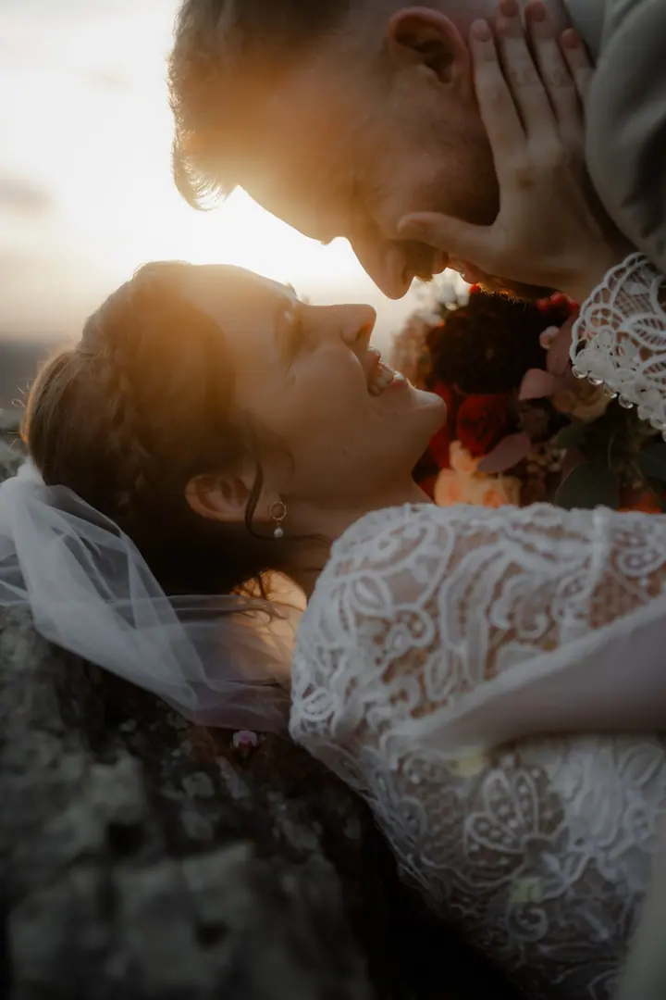
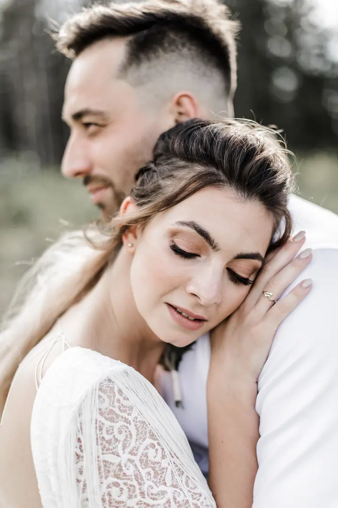
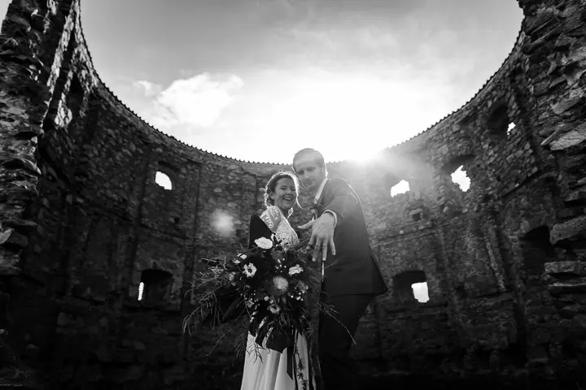

jedna
Svatby
Nafotím malou i velkou svatbu, tradiční i netradiční, ve stodole i na střeše Václaváku. Svatební balíčky stojí od 23 000 do 30 000 Kč.

Svatební a portrétní fotografka · Beroun, Praha, Plzeňsko

Jmenuji se Tereza Větrovec, jsem svatební a portrétní fotografka z Berouna a vystudovala jsem fotografii. Baví mě fotit lásku a hledat dobré světlo, nejraději na svatbách, bez kterých si už neumím představit léto.
Více o mně
Co fotím
jedna
Nafotím malou i velkou svatbu, tradiční i netradiční, ve stodole i na střeše Václaváku. Svatební balíčky stojí od 23 000 do 30 000 Kč.
Rodiny fotím opravdově a bez nepřirozeného pózování, na procházce v klidných místech kolem Berouna nebo v ateliéru. Focení trvá asi hodinu a stojí 5 000 Kč.
Těhotenské a párové focení formou momentek v přírodě, na místě, které spolu vybereme. Ráda Vás pak vyfotím i s miminkem.
Osobní portréty i promo fotky na web nebo pro Vaši značku, v exteriéru i ve studiu.
Váš den. Váš styl. Váš komfort.

Za objektivem
Jmenuji se Tereza, vystudovala jsem fotografii a mám ráda svatby. Když jedu fotit Váš velký den, přestává pro mě okolní svět existovat. Proplouvám tiše, ale snažím se být u všeho, u každého setkání, detailu i pohledu.
V létě roku 2025 jsem byla sama nevěstou, takže vím, jak nabitý svatební den umí být a jak se v něm člověk cítí. Nebráním se žádným nápadům, ať chystáte svatbu ve stodole, nebo na střeše Václaváku. Jdu do toho s Vámi.
V Berouně žiju přes 20 let a v okolí mám vytipovaná krásná a klidná místa v přírodě. Ráda za Vámi dojedu i do Prahy nebo na Plzeňsko. Moji klienti jsou často budoucí novomanželé a svatební fotky pak pozvolna přecházejí v rodinné. Není pro mě větší odměny, než když se ke mně vracíte.
Tereza
Napište mi přes formulář. Do 24 hodin se Vám ozvu a dám vědět, jestli mám Váš termín volný.
Probereme, jak si svůj den představujete a co je pro Vás důležité. Váš den, Váš styl, Váš komfort.
Proplouvám tiše a snažím se být u všeho. Při focení ve dvou Vás citlivě nasměruji, abyste se necítili strojeně.
Pečlivě vyberu a upravím fotky, které pak najdete v online galerii a můžete je sdílet s rodinou.
Portfolio
Otázky
Svatební balíčky stojí od 23 000 do 30 000 Kč. Napište mi a pošlu Vám podrobnosti.
Ano, ráda za Vámi dojedu do Prahy, na Plzeňsko i dál. Lokalitu vždycky vybereme společně.
Formou procházky, většinou 50 minut, maximálně hodinku. Stojí 5 000 Kč a dostanete 30+ upravených fotografií v online galerii a slevu 10 % na tisk. Fotky máte standardně do 4 týdnů.
Při nepříznivé předpovědi počasí rodinné nebo párové focení přesuneme na nejbližší volný termín. Nejhezčí světlo bývá odpoledne a večer.